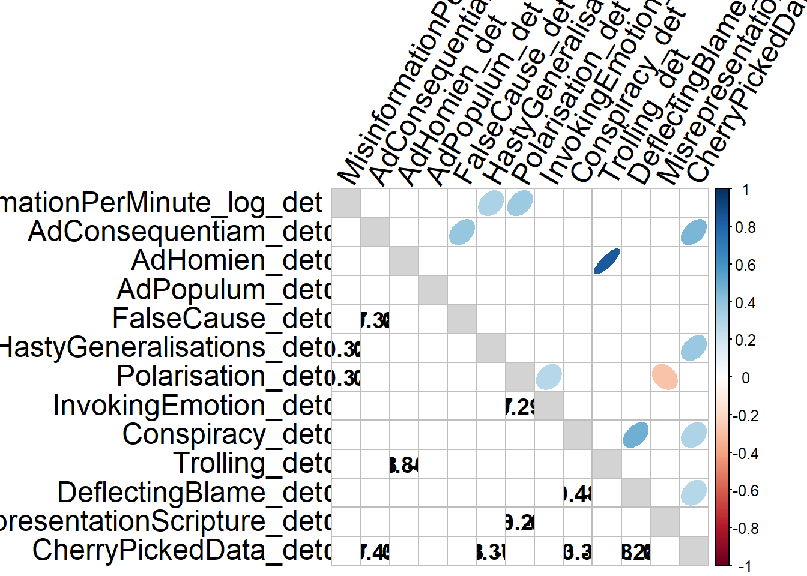
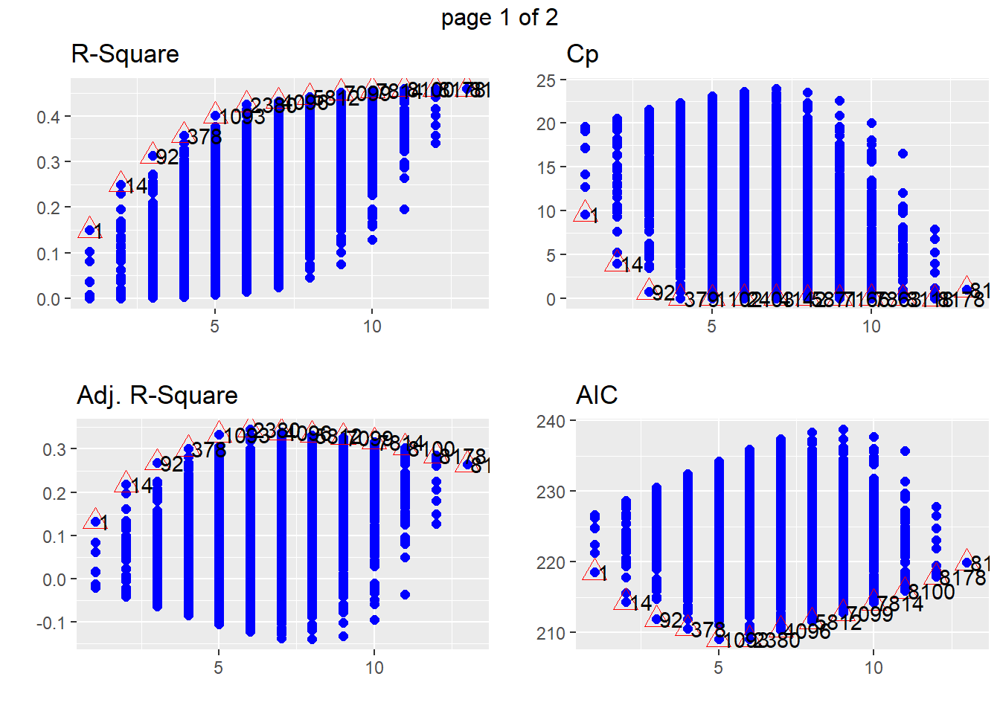
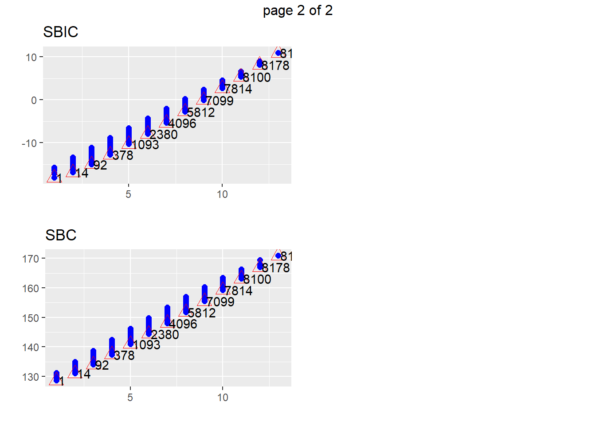
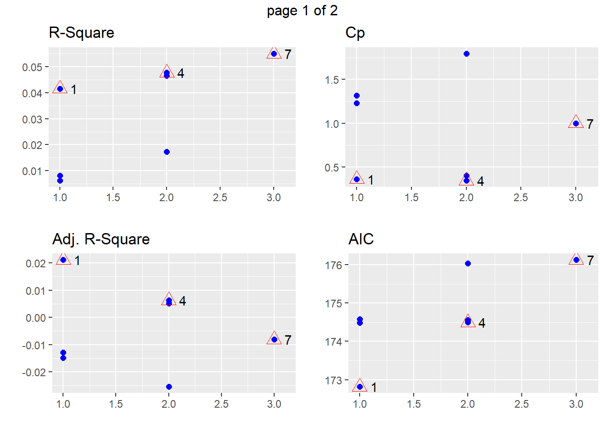
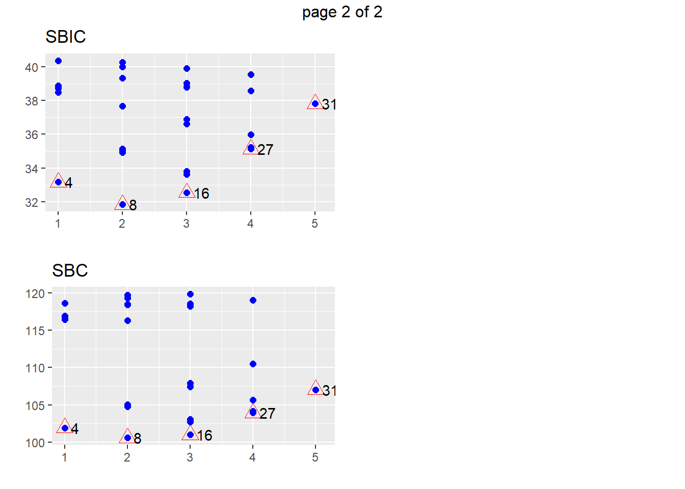
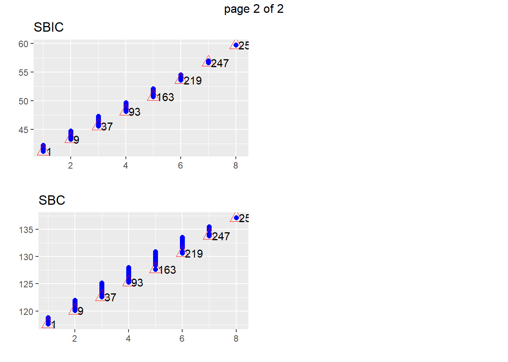
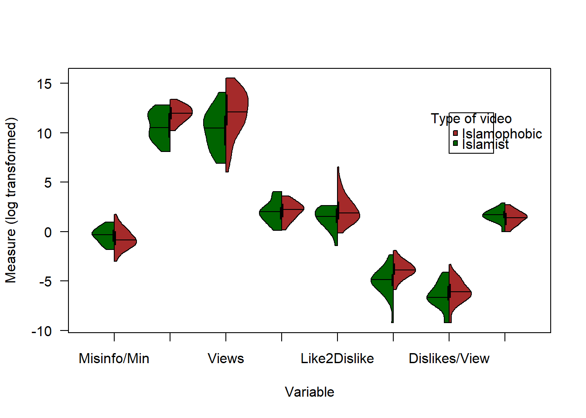
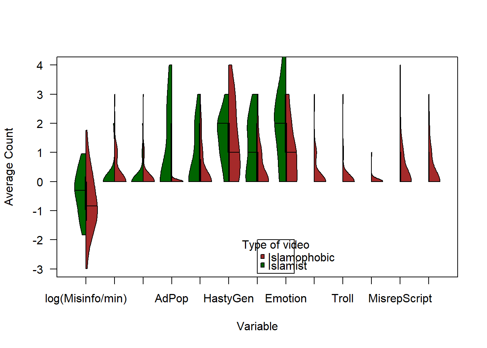

youtube
StephanLewandowsky
2019-12-31
Last updated: 2020-01-08
Checks: 6 1
Knit directory: MuhsinPhase1/
This reproducible R Markdown analysis was created with workflowr (version 1.4.0). The Checks tab describes the reproducibility checks that were applied when the results were created. The Past versions tab lists the development history.
Great! Since the R Markdown file has been committed to the Git repository, you know the exact version of the code that produced these results.
The global environment had objects present when the code in the R Markdown file was run. These objects can affect the analysis in your R Markdown file in unknown ways. For reproduciblity it’s best to always run the code in an empty environment. Use wflow_publish or wflow_build to ensure that the code is always run in an empty environment.
The following objects were defined in the global environment when these results were created:
| Name | Class | Size |
|---|---|---|
| data | environment | 56 bytes |
| env | environment | 56 bytes |
The command set.seed(20191231) was run prior to running the code in the R Markdown file. Setting a seed ensures that any results that rely on randomness, e.g. subsampling or permutations, are reproducible.
Great job! Recording the operating system, R version, and package versions is critical for reproducibility.
Nice! There were no cached chunks for this analysis, so you can be confident that you successfully produced the results during this run.
Great job! Using relative paths to the files within your workflowr project makes it easier to run your code on other machines.
Great! You are using Git for version control. Tracking code development and connecting the code version to the results is critical for reproducibility. The version displayed above was the version of the Git repository at the time these results were generated.
Note that you need to be careful to ensure that all relevant files for the analysis have been committed to Git prior to generating the results (you can use wflow_publish or wflow_git_commit). workflowr only checks the R Markdown file, but you know if there are other scripts or data files that it depends on. Below is the status of the Git repository when the results were generated:
Ignored files:
Ignored: .Rhistory
Ignored: .Rproj.user/
Untracked files:
Untracked: analysis/youtubefuncs.R
Untracked: data/IslamophobiaSPSSDATA.sav
Untracked: data/RadicalisationSPSS.sav
Note that any generated files, e.g. HTML, png, CSS, etc., are not included in this status report because it is ok for generated content to have uncommitted changes.
These are the previous versions of the R Markdown and HTML files. If you’ve configured a remote Git repository (see ?wflow_git_remote), click on the hyperlinks in the table below to view them.
| File | Version | Author | Date | Message |
|---|---|---|---|---|
| Rmd | d20b660 | StephanLewandowsky | 2020-01-08 | wflow_publish(c(“analysis/index.Rmd”, “analysis/youtube.Rmd”)) |
| html | 41b46e0 | StephanLewandowsky | 2020-01-01 | Build site. |
| Rmd | 1b5cc0e | StephanLewandowsky | 2020-01-01 | wflow_publish(c(“analysis/index.Rmd”, “analysis/youtube.Rmd”)) |
| html | 69d82ce | StephanLewandowsky | 2020-01-01 | Build site. |
| Rmd | 6b02997 | StephanLewandowsky | 2020-01-01 | wflow_publish(c(“analysis/index.Rmd”, “analysis/youtube.Rmd”)) |
| html | a33aac0 | StephanLewandowsky | 2020-01-01 | Build site. |
| Rmd | 918ca74 | StephanLewandowsky | 2020-01-01 | wflow_publish(c(“analysis/index.Rmd”, “analysis/youtube.Rmd”)) |
| html | 02ca5fb | StephanLewandowsky | 2020-01-01 | Build site. |
| Rmd | 7007bab | StephanLewandowsky | 2020-01-01 | wflow_publish(c(“analysis/index.Rmd”, “analysis/youtube.Rmd”)) |
| html | de51058 | StephanLewandowsky | 2020-01-01 | Build site. |
| Rmd | ef60d80 | StephanLewandowsky | 2020-01-01 | wflow_publish(c(“analysis/index.Rmd”, “analysis/youtube.Rmd”)) |
| html | 73cc888 | StephanLewandowsky | 2020-01-01 | Build site. |
| Rmd | 0137833 | StephanLewandowsky | 2020-01-01 | wflow_publish(c(“analysis/index.Rmd”, “analysis/youtube.Rmd”)) |
| html | ae6e0f8 | StephanLewandowsky | 2019-12-31 | Build site. |
| Rmd | 286072b | StephanLewandowsky | 2019-12-31 | wflow_publish(c(“analysis/index.Rmd”, “analysis/youtube.Rmd”)) |
| html | 2abe1cc | StephanLewandowsky | 2019-12-31 | Build site. |
| Rmd | 38a326c | StephanLewandowsky | 2019-12-31 | wflow_publish(c(“analysis/index.Rmd”, “analysis/youtube.Rmd”)) |
| html | 138148f | StephanLewandowsky | 2019-12-31 | Build site. |
| Rmd | a7ef883 | StephanLewandowsky | 2019-12-31 | wflow_publish(c(“analysis/index.Rmd”, “analysis/youtube.Rmd”)) |
0.1 Introduction
rm(list=ls())
library(lattice)
library(ggplot2)
library(tabplot)
library(tidyverse)
library(lme4)
library(RColorBrewer)
library(gridExtra)
library(stringr)
library(Hmisc)
library(reshape2)
library(psych)
library(scales)
library(summarytools) #contains descr()
library(foreign) #for SPSS
library(workflowr)
library(olsrr)
library(corrplot)
library(vioplot)
#define working directories and get functions ready
inputdir <- "data"
source ("analysis/youtubefuncs.R")
iphob <- read.spss(paste(inputdir,"IslamophobiaSPSSDATA.sav",sep="/"), use.value.labels = TRUE, to.data.frame = TRUE)
irad <- read.spss(paste(inputdir,"RadicalisationSPSS.sav",sep="/"), use.value.labels = TRUE, to.data.frame = TRUE)
irad <- irad[!rowSums(is.na(irad))==dim(irad)[2], ]0.2 Summary statistics for Islamophobia
withModularity <- 0 #determine whether or not modularity should enter as a factor into the regressions
descr(iphob)Descriptive Statistics
iphob
N: 50
AdConsequentiam AdHomien AdPopulum BetweennessCentrality
----------------- ----------------- ---------- ----------- -----------------------
Mean 0.30 0.16 0.02 200977.03
Std.Dev 0.61 0.51 0.14 148338.18
Min 0.00 0.00 0.00 26606.43
Q1 0.00 0.00 0.00 84755.97
Median 0.00 0.00 0.00 155983.60
Q3 0.00 0.00 0.00 281046.30
Max 3.00 3.00 1.00 651599.12
MAD 0.00 0.00 0.00 135844.29
IQR 0.00 0.00 0.00 192365.31
CV 2.05 3.18 7.07 0.74
Skewness 2.33 3.88 6.65 1.12
SE.Skewness 0.34 0.34 0.34 0.34
Kurtosis 6.01 17.05 43.12 0.89
N.Valid 50.00 50.00 50.00 50.00
Pct.Valid 100.00 100.00 100.00 100.00
Table: Table continues below
CherryPickedData Conspiracy DeflectingBlame Dislikes DislikesPerView
----------------- ------------------ ------------ ----------------- ---------- -----------------
Mean 0.42 0.22 0.04 1796.30 0.00
Std.Dev 0.78 0.55 0.20 2499.40 0.01
Min 0.00 0.00 0.00 0.00 0.00
Q1 0.00 0.00 0.00 69.00 0.00
Median 0.00 0.00 0.00 431.50 0.00
Q3 1.00 0.00 0.00 3000.00 0.00
Max 3.00 3.00 1.00 10000.00 0.04
MAD 0.00 0.00 0.00 621.95 0.00
IQR 1.00 0.00 0.00 2906.00 0.00
CV 1.87 2.48 4.95 1.39 1.39
Skewness 1.87 3.06 4.55 1.60 3.52
SE.Skewness 0.34 0.34 0.34 0.34 0.34
Kurtosis 2.77 11.18 19.13 1.96 15.81
N.Valid 50.00 50.00 50.00 50.00 50.00
Pct.Valid 100.00 100.00 100.00 100.00 100.00
Table: Table continues below
FakeAccounts FalseCause five HastyGeneralisations InvokingEmotion
----------------- -------------- ------------ -------- ---------------------- -----------------
Mean 0.00 0.38 0.12 1.42 1.00
Std.Dev 0.00 0.73 0.33 1.26 0.99
Min 0.00 0.00 0.00 0.00 0.00
Q1 0.00 0.00 0.00 0.00 0.00
Median 0.00 0.00 0.00 1.00 1.00
Q3 0.00 1.00 0.00 2.00 2.00
Max 0.00 3.00 1.00 4.00 3.00
MAD 0.00 0.00 0.00 1.48 1.48
IQR 0.00 0.75 0.00 2.00 2.00
CV NaN 1.91 2.74 0.89 0.99
Skewness NaN 1.83 2.27 0.44 0.62
SE.Skewness 0.34 0.34 0.34 0.34 0.34
Kurtosis NaN 2.54 3.21 -1.02 -0.75
N.Valid 50.00 50.00 50.00 50.00 50.00
Pct.Valid 100.00 100.00 100.00 100.00 100.00
Table: Table continues below
Likes LikesPerView LikestoDislikes MisinformationPerMinute
----------------- ---------- -------------- ----------------- -------------------------
Mean 13012.16 0.03 33.62 0.79
Std.Dev 19533.34 0.03 104.18 1.00
Min 0.00 0.00 0.00 0.05
Q1 1400.00 0.01 3.45 0.26
Median 3700.00 0.02 6.27 0.44
Q3 16000.00 0.04 19.82 1.00
Max 90000.00 0.15 712.50 5.84
MAD 5029.72 0.02 6.73 0.34
IQR 14575.00 0.02 16.08 0.73
CV 1.50 0.94 3.10 1.26
Skewness 2.14 2.10 5.61 3.05
SE.Skewness 0.34 0.34 0.34 0.34
Kurtosis 4.66 5.09 33.20 11.22
N.Valid 50.00 50.00 50.00 50.00
Pct.Valid 100.00 100.00 100.00 100.00
Table: Table continues below
MisrepresentationScripture Modularity one Polarisation seven
----------------- ---------------------------- ------------ -------- -------------- --------
Mean 0.42 6.84 0.02 0.48 0.02
Std.Dev 0.84 2.38 0.14 0.79 0.14
Min 0.00 0.00 0.00 0.00 0.00
Q1 0.00 6.00 0.00 0.00 0.00
Median 0.00 6.00 0.00 0.00 0.00
Q3 1.00 10.00 0.00 1.00 0.00
Max 4.00 10.00 1.00 3.00 1.00
MAD 0.00 0.74 0.00 0.00 0.00
IQR 1.00 4.00 0.00 1.00 0.00
CV 1.99 0.35 7.07 1.64 7.07
Skewness 2.41 -0.18 6.65 1.65 6.65
SE.Skewness 0.34 0.34 0.34 0.34 0.34
Kurtosis 6.18 0.13 43.12 2.13 43.12
N.Valid 50.00 50.00 50.00 50.00 50.00
Pct.Valid 100.00 100.00 100.00 100.00 100.00
Table: Table continues below
six ten Trolling VideoLength Views zero
----------------- -------- -------- ---------- ------------- ------------ --------
Mean 0.50 0.30 0.12 11.50 678605.22 0.02
Std.Dev 0.51 0.46 0.48 8.88 1028999.01 0.14
Min 0.00 0.00 0.00 1.17 411.00 0.00
Q1 0.00 0.00 0.00 4.35 46711.00 0.00
Median 0.50 0.00 0.00 9.55 182626.00 0.00
Q3 1.00 1.00 0.00 16.46 1025916.00 0.00
Max 1.00 1.00 3.00 37.08 5415557.00 1.00
MAD 0.74 0.00 0.00 7.75 265312.75 0.00
IQR 1.00 1.00 0.00 11.53 960053.00 0.00
CV 1.01 1.54 4.00 0.77 1.52 7.07
Skewness 0.00 0.85 4.68 1.11 2.45 6.65
SE.Skewness 0.34 0.34 0.34 0.34 0.34 0.34
Kurtosis -2.04 -1.31 23.65 0.53 7.25 43.12
N.Valid 50.00 50.00 50.00 50.00 50.00 50.00
Pct.Valid 100.00 100.00 100.00 100.00 100.00 100.00tableplot(iphob)
| Version | Author | Date |
|---|---|---|
| 73cc888 | StephanLewandowsky | 2020-01-01 |
temp1 <- iphob %>% select(c(Modularity,MisinformationPerMinute,BetweennessCentrality,
Views,VideoLength,LikestoDislikes,LikesPerView,DislikesPerView,
AdConsequentiam, AdHomien, AdPopulum, FalseCause, HastyGeneralisations,
Polarisation, InvokingEmotion, Conspiracy, Trolling, DeflectingBlame,
MisrepresentationScripture, CherryPickedData))
#zero likes is a clear outlier after log transform, so remove it
temp1$LikesPerView[temp1$LikesPerView==0]<-NA
temp1$LikestoDislikes[temp1$LikestoDislikes==0]<-NA
temp1$sumallrhetoric <- temp1 %>% select(AdConsequentiam:CherryPickedData) %>% apply(.,1,sum)
temp1 <- data.frame(temp1,temp1 %>% select(c(MisinformationPerMinute, BetweennessCentrality, Views,
VideoLength, LikestoDislikes ,LikesPerView, DislikesPerView, sumallrhetoric)) %>%
mutate_all(~ log(. + .0001)) %>% rename_all( ~paste0(., "_log") ))
temp1 <- rename(temp1,MisinformationPerMinute_log_det = MisinformationPerMinute_log)
#now look at detailed endogenous variables
temp2 <- iphob %>% select(AdConsequentiam:CherryPickedData) %>% rename_all( ~paste0(., "_det") ) %>%
select(-which((lapply(.,sd) %>% unlist)==0))
iphomainvars <- data.frame(temp1, temp2)
multi.hist(iphomainvars%>%select(contains("log")))
#plot violins
plotvn <- c("Misinfo/Min", "Centrality", "Views" , "VidLength", "Like2Dislike", "Likes/View", "Dislikes/View", "SumRhetoric" )
x11(width=20,height=10)
vioplot(iphomainvars %>% select(contains("_log")), col = "brown", las=1,names=plotvn)
#corrplot...
RM <- cor(iphomainvars%>%select(contains("log")))
RM2 <- cor.mtest(iphomainvars%>%select(contains("log")), conf.level = .95)
diag(RM)<-NA
x11(width=11,height=10)
#colnames(RM) <- rownames(RM) <- c("Conservatism","Truth Knowable","Intuitive","Conspiracism","Need for Chaos","Knowledge Source",
#"Consensus AIDS","Consensus Vaccinations","Consensus Climate")
corrplot.mixed(RM, lower.col = "black", number.cex = 1.2,insig = "blank",
upper="ellipse",p.mat = RM2$p,sig.level=.05,
tl.pos="lt",tl.col="black",na.label = ".",bg="lightgray",
tl.cex=1.5,tl.srt=60)
#dev.print(pdf,paste(figdir,"cormat.pdf",sep="/"))
RM <- cor(iphomainvars%>%select(contains("det")))
RM2 <- cor.mtest(iphomainvars%>%select(contains("det")), conf.level = .95)
diag(RM)<-NA
x11(width=11,height=10)
#colnames(RM) <- rownames(RM) <- c("Conservatism","Truth Knowable","Intuitive","Conspiracism","Need for Chaos","Knowledge Source",
#"Consensus AIDS","Consensus Vaccinations","Consensus Climate")
corrplot.mixed(RM, lower.col = "black", number.cex = 1.2,insig = "blank",
upper="ellipse",p.mat = RM2$p,sig.level=.05,
tl.pos="lt",tl.col="black",na.label = ".",bg="lightgray",
tl.cex=1.5,tl.srt=60) ## Predict various outcomes for Islamophobia
0.2.1 Predict views for Islamophobia, first from exogenous then endogenous parameters
dv <- "Views_log"
exovars1 <- paste(names(iphomainvars %>% select(c(BetweennessCentrality_log:DislikesPerView_log)) %>% select(-dv)),collapse=" + ")
do1reg(dv, exovars1, iphomainvars, withModularity) #last argument indicates whether modularity should be in thereViews_log ~ BetweennessCentrality_log + VideoLength_log + LikestoDislikes_log +
LikesPerView_log + DislikesPerView_log

# A tibble: 5 x 6
Index N Predictors `R-Square` `Adj. R-Square` `Mallow's Cp`
<int> <int> <chr> <dbl> <dbl> <dbl>
1 1 1 LikesPerView_log 0.109 0.0897 0.416
2 6 2 VideoLength_log Lik~ 0.137 0.0992 0.984
3 16 3 VideoLength_log Lik~ 0.149 0.0918 2.39
4 26 4 VideoLength_log Lik~ 0.154 0.0769 4.11
5 31 5 BetweennessCentrali~ 0.156 0.0580 6
Call:
lm(formula = bmFormula, data = d4regglobal)
Residuals:
Min 1Q Median 3Q Max
-6.6968 -0.9012 0.0879 1.5416 3.1461
Coefficients:
Estimate Std. Error t value Pr(>|t|)
(Intercept) 8.8539 1.3685 6.470 5.22e-08 ***
LikesPerView_log -0.8355 0.3490 -2.394 0.0207 *
---
Signif. codes: 0 '***' 0.001 '**' 0.01 '*' 0.05 '.' 0.1 ' ' 1
Residual standard error: 2.052 on 47 degrees of freedom
(1 observation deleted due to missingness)
Multiple R-squared: 0.1087, Adjusted R-squared: 0.08971
F-statistic: 5.73 on 1 and 47 DF, p-value: 0.02072
Call:
lm(formula = bmFormula, data = d4regglobal)
Residuals:
Min 1Q Median 3Q Max
-6.0869 -1.2507 0.3872 1.6496 3.1722
Coefficients:
Estimate Std. Error t value Pr(>|t|)
(Intercept) 9.7217 1.5350 6.333 9.15e-08 ***
VideoLength_log -0.4184 0.3420 -1.224 0.2274
LikesPerView_log -0.8428 0.3472 -2.427 0.0192 *
---
Signif. codes: 0 '***' 0.001 '**' 0.01 '*' 0.05 '.' 0.1 ' ' 1
Residual standard error: 2.041 on 46 degrees of freedom
(1 observation deleted due to missingness)
Multiple R-squared: 0.1368, Adjusted R-squared: 0.09923
F-statistic: 3.644 on 2 and 46 DF, p-value: 0.03396
Call:
lm(formula = bmFormula, data = d4regglobal)
Residuals:
Min 1Q Median 3Q Max
-6.1118 -1.2303 0.3665 1.5385 3.0239
Coefficients:
Estimate Std. Error t value Pr(>|t|)
(Intercept) 8.4340 2.2324 3.778 0.000462 ***
VideoLength_log -0.4014 0.3446 -1.165 0.250158
LikestoDislikes_log -0.8124 0.3441 -2.361 0.022620 *
DislikesPerView_log -1.0493 0.4321 -2.428 0.019221 *
---
Signif. codes: 0 '***' 0.001 '**' 0.01 '*' 0.05 '.' 0.1 ' ' 1
Residual standard error: 2.049 on 45 degrees of freedom
(1 observation deleted due to missingness)
Multiple R-squared: 0.1485, Adjusted R-squared: 0.09175
F-statistic: 2.616 on 3 and 45 DF, p-value: 0.06255
Call:
lm(formula = bmFormula, data = d4regglobal)
Residuals:
Min 1Q Median 3Q Max
-6.1485 -1.1542 0.3749 1.5876 2.9083
Coefficients:
Estimate Std. Error t value Pr(>|t|)
(Intercept) 7.6756 2.6714 2.873 0.00623 **
VideoLength_log -0.4036 0.3474 -1.162 0.25163
LikestoDislikes_log -3.3541 4.8367 -0.693 0.49166
LikesPerView_log 2.6028 4.9403 0.527 0.60094
DislikesPerView_log -3.7853 5.2114 -0.726 0.47146
---
Signif. codes: 0 '***' 0.001 '**' 0.01 '*' 0.05 '.' 0.1 ' ' 1
Residual standard error: 2.066 on 44 degrees of freedom
(1 observation deleted due to missingness)
Multiple R-squared: 0.1539, Adjusted R-squared: 0.07693
F-statistic: 2 on 4 and 44 DF, p-value: 0.1111endovars4all <- paste(names(iphomainvars %>% select(contains("det"))),collapse=" + ")
do1reg(dv, endovars4all, iphomainvars, withModularity) Views_log ~ MisinformationPerMinute_log_det + AdConsequentiam_det +
AdHomien_det + AdPopulum_det + FalseCause_det + HastyGeneralisations_det +
Polarisation_det + InvokingEmotion_det + Conspiracy_det +
Trolling_det + DeflectingBlame_det + MisrepresentationScripture_det +
CherryPickedData_det

# A tibble: 13 x 6
Index N Predictors `R-Square` `Adj. R-Square` `Mallow's Cp`
<int> <int> <chr> <dbl> <dbl> <dbl>
1 1 1 FalseCause_det 0.150 0.132 10.6
2 14 2 AdPopulum_det Fals~ 0.250 0.218 5.98
3 92 3 AdPopulum_det Fals~ 0.313 0.268 3.76
4 378 4 AdPopulum_det Fals~ 0.358 0.300 2.80
5 1093 5 MisinformationPerM~ 0.401 0.333 1.91
6 2380 6 MisinformationPerM~ 0.425 0.345 2.31
7 4096 7 MisinformationPerM~ 0.433 0.338 3.81
8 5812 8 MisinformationPerM~ 0.442 0.333 5.21
9 7099 9 MisinformationPerM~ 0.451 0.327 6.58
10 7814 10 MisinformationPerM~ 0.456 0.317 8.22
11 8100 11 MisinformationPerM~ 0.460 0.303 10.0
12 8178 12 MisinformationPerM~ 0.460 0.284 12.0
13 8191 13 MisinformationPerM~ 0.460 0.265 14
Call:
lm(formula = bmFormula, data = d4regglobal)
Residuals:
Min 1Q Median 3Q Max
-6.3963 -1.3478 0.0685 1.5574 3.0899
Coefficients:
Estimate Std. Error t value Pr(>|t|)
(Intercept) 12.4149 0.3310 37.507 < 2e-16 ***
FalseCause_det -1.1865 0.4074 -2.912 0.00543 **
---
Signif. codes: 0 '***' 0.001 '**' 0.01 '*' 0.05 '.' 0.1 ' ' 1
Residual standard error: 2.069 on 48 degrees of freedom
Multiple R-squared: 0.1501, Adjusted R-squared: 0.1324
F-statistic: 8.48 on 1 and 48 DF, p-value: 0.005433
Call:
lm(formula = bmFormula, data = d4regglobal)
Residuals:
Min 1Q Median 3Q Max
-6.5237 -1.1708 0.0566 1.4300 2.9625
Coefficients:
Estimate Std. Error t value Pr(>|t|)
(Intercept) 12.5423 0.3184 39.397 < 2e-16 ***
AdPopulum_det -4.9754 1.9897 -2.501 0.01594 *
FalseCause_det -1.2598 0.3879 -3.248 0.00215 **
---
Signif. codes: 0 '***' 0.001 '**' 0.01 '*' 0.05 '.' 0.1 ' ' 1
Residual standard error: 1.964 on 47 degrees of freedom
Multiple R-squared: 0.2499, Adjusted R-squared: 0.218
F-statistic: 7.831 on 2 and 47 DF, p-value: 0.001161
Call:
lm(formula = bmFormula, data = d4regglobal)
Residuals:
Min 1Q Median 3Q Max
-6.1104 -1.1024 0.1545 1.1274 3.3758
Coefficients:
Estimate Std. Error t value Pr(>|t|)
(Intercept) 12.8449 0.3412 37.643 < 2e-16 ***
AdPopulum_det -4.5622 1.9349 -2.358 0.02269 *
FalseCause_det -1.1737 0.3775 -3.109 0.00322 **
Polarisation_det -0.7160 0.3478 -2.059 0.04523 *
---
Signif. codes: 0 '***' 0.001 '**' 0.01 '*' 0.05 '.' 0.1 ' ' 1
Residual standard error: 1.9 on 46 degrees of freedom
Multiple R-squared: 0.3132, Adjusted R-squared: 0.2684
F-statistic: 6.993 on 3 and 46 DF, p-value: 0.0005674
Call:
lm(formula = bmFormula, data = d4regglobal)
Residuals:
Min 1Q Median 3Q Max
-6.3043 -0.9930 0.0055 1.2574 3.7703
Coefficients:
Estimate Std. Error t value Pr(>|t|)
(Intercept) 13.2037 0.3908 33.786 < 2e-16 ***
AdPopulum_det -4.7560 1.8952 -2.509 0.01576 *
FalseCause_det -1.2490 0.3716 -3.361 0.00159 **
Polarisation_det -0.8808 0.3527 -2.497 0.01624 *
MisrepresentationScripture_det -0.5884 0.3337 -1.763 0.08465 .
---
Signif. codes: 0 '***' 0.001 '**' 0.01 '*' 0.05 '.' 0.1 ' ' 1
Residual standard error: 1.858 on 45 degrees of freedom
Multiple R-squared: 0.3576, Adjusted R-squared: 0.3005
F-statistic: 6.262 on 4 and 45 DF, p-value: 0.00042880.2.2 Predict centrality for Islamophobia, first from exogenous then endogenous parameters
dv2 <- "BetweennessCentrality_log"
exovars2 <- paste(names(iphomainvars %>% select(c(BetweennessCentrality_log:DislikesPerView_log)) %>% select(-dv2)),collapse=" + ")
do1reg(dv2, exovars2, iphomainvars, withModularity) BetweennessCentrality_log ~ Views_log + VideoLength_log + LikestoDislikes_log +
LikesPerView_log + DislikesPerView_log

# A tibble: 5 x 6
Index N Predictors `R-Square` `Adj. R-Square` `Mallow's Cp`
<int> <int> <chr> <dbl> <dbl> <dbl>
1 1 1 LikestoDislikes_log 0.0415 0.0211 -1.29
2 6 2 LikesPerView_log Di~ 0.0531 0.0120 0.182
3 16 3 Views_log LikesPerV~ 0.0553 -0.00765 2.08
4 26 4 Views_log LikestoDi~ 0.0571 -0.0286 4.00
5 31 5 Views_log VideoLeng~ 0.0571 -0.0525 6
Call:
lm(formula = bmFormula, data = d4regglobal)
Residuals:
Min 1Q Median 3Q Max
-1.71986 -0.51278 0.08464 0.64840 1.54485
Coefficients:
Estimate Std. Error t value Pr(>|t|)
(Intercept) 12.20380 0.22203 54.965 <2e-16 ***
LikestoDislikes_log -0.12103 0.08482 -1.427 0.16
---
Signif. codes: 0 '***' 0.001 '**' 0.01 '*' 0.05 '.' 0.1 ' ' 1
Residual standard error: 0.8051 on 47 degrees of freedom
(1 observation deleted due to missingness)
Multiple R-squared: 0.04151, Adjusted R-squared: 0.02112
F-statistic: 2.036 on 1 and 47 DF, p-value: 0.1603
Call:
lm(formula = bmFormula, data = d4regglobal)
Residuals:
Min 1Q Median 3Q Max
-1.69809 -0.46755 0.04919 0.68355 1.57850
Coefficients:
Estimate Std. Error t value Pr(>|t|)
(Intercept) 11.69825 0.79305 14.751 <2e-16 ***
LikesPerView_log -0.20302 0.13866 -1.464 0.150
DislikesPerView_log 0.09047 0.10785 0.839 0.406
---
Signif. codes: 0 '***' 0.001 '**' 0.01 '*' 0.05 '.' 0.1 ' ' 1
Residual standard error: 0.8088 on 46 degrees of freedom
(1 observation deleted due to missingness)
Multiple R-squared: 0.05314, Adjusted R-squared: 0.01198
F-statistic: 1.291 on 2 and 46 DF, p-value: 0.2848
Call:
lm(formula = bmFormula, data = d4regglobal)
Residuals:
Min 1Q Median 3Q Max
-1.70885 -0.44369 0.06052 0.64969 1.57818
Coefficients:
Estimate Std. Error t value Pr(>|t|)
(Intercept) 11.55195 0.92032 12.552 2.66e-16 ***
Views_log 0.01885 0.05841 0.323 0.748
LikesPerView_log -0.18788 0.14768 -1.272 0.210
DislikesPerView_log 0.09428 0.10955 0.861 0.394
---
Signif. codes: 0 '***' 0.001 '**' 0.01 '*' 0.05 '.' 0.1 ' ' 1
Residual standard error: 0.8168 on 45 degrees of freedom
(1 observation deleted due to missingness)
Multiple R-squared: 0.05533, Adjusted R-squared: -0.007649
F-statistic: 0.8785 on 3 and 45 DF, p-value: 0.4594
Call:
lm(formula = bmFormula, data = d4regglobal)
Residuals:
Min 1Q Median 3Q Max
-1.6932 -0.4151 0.0375 0.6176 1.6034
Coefficients:
Estimate Std. Error t value Pr(>|t|)
(Intercept) 11.71765 1.09081 10.742 7.01e-14 ***
Views_log 0.02057 0.05931 0.347 0.730
LikestoDislikes_log 0.56406 1.94151 0.291 0.773
LikesPerView_log -0.76117 1.97889 -0.385 0.702
DislikesPerView_log 0.70156 2.09320 0.335 0.739
---
Signif. codes: 0 '***' 0.001 '**' 0.01 '*' 0.05 '.' 0.1 ' ' 1
Residual standard error: 0.8253 on 44 degrees of freedom
(1 observation deleted due to missingness)
Multiple R-squared: 0.05714, Adjusted R-squared: -0.02858
F-statistic: 0.6666 on 4 and 44 DF, p-value: 0.6186do1reg(dv2, endovars4all, iphomainvars, withModularity) BetweennessCentrality_log ~ MisinformationPerMinute_log_det +
AdConsequentiam_det + AdHomien_det + AdPopulum_det + FalseCause_det +
HastyGeneralisations_det + Polarisation_det + InvokingEmotion_det +
Conspiracy_det + Trolling_det + DeflectingBlame_det + MisrepresentationScripture_det +
CherryPickedData_det

# A tibble: 13 x 6
Index N Predictors `R-Square` `Adj. R-Square` `Mallow's Cp`
<int> <int> <chr> <dbl> <dbl> <dbl>
1 1 1 Conspiracy_det 0.0500 0.0302 -6.48
2 14 2 Conspiracy_det Mis~ 0.0787 0.0395 -5.68
3 92 3 AdPopulum_det Cons~ 0.0943 0.0353 -4.33
4 378 4 AdPopulum_det Invo~ 0.104 0.0243 -2.73
5 1093 5 AdPopulum_det Hast~ 0.110 0.00902 -0.987
6 2380 6 AdPopulum_det Fals~ 0.118 -0.00462 0.670
7 4096 7 AdPopulum_det Fals~ 0.123 -0.0229 2.47
8 5812 8 MisinformationPerM~ 0.127 -0.0435 4.32
9 7099 9 MisinformationPerM~ 0.130 -0.0659 6.19
10 7814 10 MisinformationPerM~ 0.132 -0.0903 8.09
11 8100 11 MisinformationPerM~ 0.134 -0.116 10.0
12 8178 12 MisinformationPerM~ 0.134 -0.146 12.0
13 8191 13 MisinformationPerM~ 0.135 -0.178 14
Call:
lm(formula = bmFormula, data = d4regglobal)
Residuals:
Min 1Q Median 3Q Max
-1.66380 -0.52463 0.08799 0.50558 1.53448
Coefficients:
Estimate Std. Error t value Pr(>|t|)
(Intercept) 11.8527 0.1214 97.658 <2e-16 ***
Conspiracy_det 0.3307 0.2081 1.589 0.119
---
Signif. codes: 0 '***' 0.001 '**' 0.01 '*' 0.05 '.' 0.1 ' ' 1
Residual standard error: 0.7948 on 48 degrees of freedom
Multiple R-squared: 0.04997, Adjusted R-squared: 0.03017
F-statistic: 2.525 on 1 and 48 DF, p-value: 0.1187
Call:
lm(formula = bmFormula, data = d4regglobal)
Residuals:
Min 1Q Median 3Q Max
-1.73416 -0.44029 0.06555 0.43522 1.62800
Coefficients:
Estimate Std. Error t value Pr(>|t|)
(Intercept) 11.9231 0.1340 88.954 <2e-16 ***
Conspiracy_det 0.3237 0.2072 1.562 0.125
MisrepresentationScripture_det -0.1639 0.1353 -1.211 0.232
---
Signif. codes: 0 '***' 0.001 '**' 0.01 '*' 0.05 '.' 0.1 ' ' 1
Residual standard error: 0.791 on 47 degrees of freedom
Multiple R-squared: 0.07871, Adjusted R-squared: 0.0395
F-statistic: 2.008 on 2 and 47 DF, p-value: 0.1457
Call:
lm(formula = bmFormula, data = d4regglobal)
Residuals:
Min 1Q Median 3Q Max
-1.74373 -0.41057 0.02349 0.41406 1.62670
Coefficients:
Estimate Std. Error t value Pr(>|t|)
(Intercept) 11.9326 0.1348 88.547 <2e-16 ***
AdPopulum_det -0.7304 0.8203 -0.890 0.3779
Conspiracy_det 0.3625 0.2122 1.708 0.0943 .
MisrepresentationScripture_det -0.1722 0.1360 -1.266 0.2118
---
Signif. codes: 0 '***' 0.001 '**' 0.01 '*' 0.05 '.' 0.1 ' ' 1
Residual standard error: 0.7927 on 46 degrees of freedom
Multiple R-squared: 0.09432, Adjusted R-squared: 0.03525
F-statistic: 1.597 on 3 and 46 DF, p-value: 0.2031
Call:
lm(formula = bmFormula, data = d4regglobal)
Residuals:
Min 1Q Median 3Q Max
-1.74724 -0.40336 -0.00654 0.41751 1.44170
Coefficients:
Estimate Std. Error t value Pr(>|t|)
(Intercept) 11.85213 0.17840 66.434 <2e-16 ***
AdPopulum_det -0.78086 0.82814 -0.943 0.351
InvokingEmotion_det 0.08402 0.12108 0.694 0.491
Conspiracy_det 0.32541 0.21998 1.479 0.146
MisrepresentationScripture_det -0.15870 0.13810 -1.149 0.257
---
Signif. codes: 0 '***' 0.001 '**' 0.01 '*' 0.05 '.' 0.1 ' ' 1
Residual standard error: 0.7972 on 45 degrees of freedom
Multiple R-squared: 0.1039, Adjusted R-squared: 0.02425
F-statistic: 1.304 on 4 and 45 DF, p-value: 0.28280.2.3 Predict likes to dislikes for Islamophobia, first from exogenous then endogenous parameters
dv3 <- "LikestoDislikes_log"
#note that all like variables are removed from list of potential predictors
exovars3 <- paste(names(iphomainvars %>% select(c(BetweennessCentrality_log:DislikesPerView_log)) %>% select(-contains("ikes"))),collapse=" + ")
do1reg(dv3, exovars3, iphomainvars, withModularity) LikestoDislikes_log ~ BetweennessCentrality_log + Views_log +
VideoLength_log
# A tibble: 3 x 6
Index N Predictors `R-Square` `Adj. R-Square` `Mallow's Cp`
<int> <int> <chr> <dbl> <dbl> <dbl>
1 1 1 BetweennessCentrali~ 0.0415 0.0211 0.639
2 4 2 BetweennessCentrali~ 0.0477 0.00630 2.34
3 7 3 BetweennessCentrali~ 0.0549 -0.00807 4
Call:
lm(formula = bmFormula, data = d4regglobal)
Residuals:
Min 1Q Median 3Q Max
-2.2428 -0.8706 -0.2918 0.6590 4.3265
Coefficients:
Estimate Std. Error t value Pr(>|t|)
(Intercept) 6.3322 2.8754 2.202 0.0326 *
BetweennessCentrality_log -0.3430 0.2404 -1.427 0.1603
---
Signif. codes: 0 '***' 0.001 '**' 0.01 '*' 0.05 '.' 0.1 ' ' 1
Residual standard error: 1.355 on 47 degrees of freedom
(1 observation deleted due to missingness)
Multiple R-squared: 0.04151, Adjusted R-squared: 0.02112
F-statistic: 2.036 on 1 and 47 DF, p-value: 0.1603
Call:
lm(formula = bmFormula, data = d4regglobal)
Residuals:
Min 1Q Median 3Q Max
-2.0713 -0.9051 -0.3647 0.7155 4.3501
Coefficients:
Estimate Std. Error t value Pr(>|t|)
(Intercept) 6.5950 2.9367 2.246 0.0296 *
BetweennessCentrality_log -0.3426 0.2422 -1.414 0.1640
VideoLength_log -0.1251 0.2288 -0.547 0.5872
---
Signif. codes: 0 '***' 0.001 '**' 0.01 '*' 0.05 '.' 0.1 ' ' 1
Residual standard error: 1.366 on 46 degrees of freedom
(1 observation deleted due to missingness)
Multiple R-squared: 0.0477, Adjusted R-squared: 0.006298
F-statistic: 1.152 on 2 and 46 DF, p-value: 0.3249
Call:
lm(formula = bmFormula, data = d4regglobal)
Residuals:
Min 1Q Median 3Q Max
-1.9520 -0.9427 -0.2438 0.7833 4.3454
Coefficients:
Estimate Std. Error t value Pr(>|t|)
(Intercept) 7.13914 3.09976 2.303 0.0259 *
BetweennessCentrality_log -0.32846 0.24516 -1.340 0.1871
Views_log -0.05517 0.09401 -0.587 0.5602
VideoLength_log -0.14742 0.23356 -0.631 0.5311
---
Signif. codes: 0 '***' 0.001 '**' 0.01 '*' 0.05 '.' 0.1 ' ' 1
Residual standard error: 1.375 on 45 degrees of freedom
(1 observation deleted due to missingness)
Multiple R-squared: 0.05494, Adjusted R-squared: -0.008068
F-statistic: 0.8719 on 3 and 45 DF, p-value: 0.4627do1reg(dv3, endovars4all, iphomainvars, withModularity) LikestoDislikes_log ~ MisinformationPerMinute_log_det + AdConsequentiam_det +
AdHomien_det + AdPopulum_det + FalseCause_det + HastyGeneralisations_det +
Polarisation_det + InvokingEmotion_det + Conspiracy_det +
Trolling_det + DeflectingBlame_det + MisrepresentationScripture_det +
CherryPickedData_det
Call:
lm(formula = allregFormula, data = d4regglobal)
Residuals:
Min 1Q Median 3Q Max
-2.3840 -0.7717 -0.1757 0.7538 4.2637
Coefficients: (1 not defined because of singularities)
Estimate Std. Error t value Pr(>|t|)
(Intercept) 2.66190 0.57332 4.643 4.45e-05 ***
MisinformationPerMinute_log_det 0.13147 0.25470 0.516 0.609
AdConsequentiam_det 0.09432 0.43024 0.219 0.828
AdHomien_det 0.71800 0.80002 0.897 0.375
AdPopulum_det NA NA NA NA
FalseCause_det -0.03338 0.31944 -0.105 0.917
HastyGeneralisations_det -0.02104 0.19936 -0.106 0.917
Polarisation_det -0.53601 0.33079 -1.620 0.114
InvokingEmotion_det -0.05420 0.23447 -0.231 0.818
Conspiracy_det 0.61967 0.53455 1.159 0.254
Trolling_det 0.09649 0.83572 0.115 0.909
DeflectingBlame_det -0.72929 1.30491 -0.559 0.580
MisrepresentationScripture_det -0.37432 0.28228 -1.326 0.193
CherryPickedData_det -0.16503 0.35896 -0.460 0.648
---
Signif. codes: 0 '***' 0.001 '**' 0.01 '*' 0.05 '.' 0.1 ' ' 1
Residual standard error: 1.422 on 36 degrees of freedom
(1 observation deleted due to missingness)
Multiple R-squared: 0.1916, Adjusted R-squared: -0.07792
F-statistic: 0.7109 on 12 and 36 DF, p-value: 0.73090.3 Summary statistics for Radical Islamist videos
descr(irad)Descriptive Statistics
irad
N: 26
AdConsequentiam AdHomien AdPopulum BetweennessCentrality
----------------- ----------------- ---------- ----------- -----------------------
Mean 0.15 0.00 0.15 96055.20
Std.Dev 0.54 0.00 0.46 107384.63
Min 0.00 0.00 0.00 3217.65
Q1 0.00 0.00 0.00 12602.89
Median 0.00 0.00 0.00 37690.03
Q3 0.00 0.00 0.00 160490.37
Max 2.00 0.00 2.00 357937.77
MAD 0.00 0.00 0.00 50893.25
IQR 0.00 0.00 0.00 142638.91
CV 3.53 NaN 3.02 1.12
Skewness 2.99 NaN 2.86 1.12
SE.Skewness 0.46 0.46 0.46 0.46
Kurtosis 7.25 NaN 7.49 0.14
N.Valid 26.00 26.00 26.00 26.00
Pct.Valid 100.00 100.00 100.00 100.00
Table: Table continues below
CherryPickedData Conspiracy DeflectingBlame Dislikes DislikesPerView
----------------- ------------------ ------------ ----------------- ---------- -----------------
Mean 0.04 1.15 0.00 233.72 0.00
Std.Dev 0.20 1.08 0.00 424.05 0.00
Min 0.00 0.00 0.00 0.00 0.00
Q1 0.00 0.00 0.00 27.00 0.00
Median 0.00 1.00 0.00 62.00 0.00
Q3 0.00 2.00 0.00 159.00 0.00
Max 1.00 3.00 0.00 1600.00 0.02
MAD 0.00 1.48 0.00 81.54 0.00
IQR 0.00 2.00 0.00 132.00 0.00
CV 5.10 0.94 NaN 1.81 1.39
Skewness 4.53 0.25 NaN 2.15 1.90
SE.Skewness 0.46 0.46 0.46 0.46 0.46
Kurtosis 19.23 -1.42 NaN 3.37 2.72
N.Valid 26.00 26.00 26.00 25.00 26.00
Pct.Valid 100.00 100.00 100.00 96.15 100.00
Table: Table continues below
FakeAccounts FalseCause HastyGeneralisation InvokingEmotion Likes
----------------- -------------- ------------ --------------------- ----------------- ---------
Mean 0.00 0.08 1.04 1.50 1144.32
Std.Dev 0.00 0.39 1.43 0.91 2076.29
Min 0.00 0.00 0.00 0.00 9.00
Q1 0.00 0.00 0.00 1.00 33.00
Median 0.00 0.00 0.00 2.00 270.00
Q3 0.00 0.00 2.00 2.00 935.00
Max 0.00 2.00 4.00 3.00 9400.00
MAD 0.00 0.00 0.00 1.48 379.55
IQR 0.00 0.00 2.00 1.00 902.00
CV NaN 5.10 1.37 0.60 1.81
Skewness NaN 4.53 0.81 -0.16 2.67
SE.Skewness 0.46 0.46 0.46 0.46 0.46
Kurtosis NaN 19.23 -0.95 -0.91 7.35
N.Valid 26.00 26.00 26.00 26.00 25.00
Pct.Valid 100.00 100.00 100.00 100.00 96.15
Table: Table continues below
LikesPerView MisinformationPerMinute MisrepresentationScripture Modularity
----------------- -------------- ------------------------- ---------------------------- ------------
Mean 0.01 0.93 2.04 16.00
Std.Dev 0.02 0.69 1.54 13.37
Min 0.00 0.16 0.00 0.00
Q1 0.00 0.36 1.00 1.00
Median 0.01 0.74 2.00 17.50
Q3 0.01 1.21 3.00 29.00
Max 0.09 2.60 5.00 29.00
MAD 0.01 0.59 1.48 17.05
IQR 0.01 0.80 2.00 28.00
CV 1.50 0.74 0.75 0.84
Skewness 2.49 1.00 0.32 -0.08
SE.Skewness 0.46 0.46 0.46 0.46
Kurtosis 5.57 0.00 -0.64 -1.98
N.Valid 26.00 26.00 26.00 26.00
Pct.Valid 100.00 100.00 100.00 100.00
Table: Table continues below
one Polarisation seven Trolling twentyeight twentynine
----------------- -------- -------------- -------- ---------- ------------- ------------
Mean 0.19 0.85 0.19 0.00 0.04 0.46
Std.Dev 0.40 1.05 0.40 0.00 0.20 0.51
Min 0.00 0.00 0.00 0.00 0.00 0.00
Q1 0.00 0.00 0.00 0.00 0.00 0.00
Median 0.00 0.00 0.00 0.00 0.00 0.00
Q3 0.00 2.00 0.00 0.00 0.00 1.00
Max 1.00 3.00 1.00 0.00 1.00 1.00
MAD 0.00 0.00 0.00 0.00 0.00 0.00
IQR 0.00 2.00 0.00 0.00 0.00 1.00
CV 2.09 1.24 2.09 NaN 5.10 1.10
Skewness 1.47 0.70 1.47 NaN 4.53 0.15
SE.Skewness 0.46 0.46 0.46 0.46 0.46 0.46
Kurtosis 0.18 -1.05 0.18 NaN 19.23 -2.05
N.Valid 26.00 26.00 26.00 26.00 26.00 26.00
Pct.Valid 100.00 100.00 100.00 100.00 100.00 100.00
Table: Table continues below
VideoLength Views zero
----------------- ------------- ------------ --------
Mean 14.83 159020.96 0.12
Std.Dev 18.10 315414.26 0.33
Min 1.15 1000.00 0.00
Q1 3.30 5950.00 0.00
Median 7.63 35990.00 0.00
Q3 12.05 129746.00 0.00
Max 56.31 1284704.00 1.00
MAD 6.49 50969.56 0.00
IQR 8.23 116468.50 0.00
CV 1.22 1.98 2.82
Skewness 1.36 2.59 2.27
SE.Skewness 0.46 0.46 0.46
Kurtosis 0.11 5.75 3.28
N.Valid 26.00 26.00 26.00
Pct.Valid 100.00 100.00 100.00tableplot(irad)
| Version | Author | Date |
|---|---|---|
| 02ca5fb | StephanLewandowsky | 2020-01-01 |
radtemp1 <- irad %>% select(c(Modularity,MisinformationPerMinute,BetweennessCentrality,
Views,VideoLength,LikesPerView,DislikesPerView,
AdConsequentiam, AdHomien, AdPopulum, FalseCause,
Polarisation, InvokingEmotion, Conspiracy, Trolling, DeflectingBlame,
MisrepresentationScripture, CherryPickedData, FakeAccounts))
radtemp1$LikestoDislikes <- irad$Likes/irad$Dislikes
radtemp1$LikestoDislikes[radtemp1$LikestoDislikes==Inf] <- NA
radtemp1$sumallrhetoric <- radtemp1 %>% select(AdConsequentiam:FakeAccounts) %>% apply(.,1,sum)
radtemp1 <- data.frame(radtemp1,radtemp1 %>% select(c(MisinformationPerMinute, BetweennessCentrality, Views,
VideoLength, LikestoDislikes ,LikesPerView, DislikesPerView, sumallrhetoric)) %>%
mutate_all(~ log(. + .0001)) %>% rename_all( ~paste0(., "_log") ))
radtemp1 <- rename(radtemp1,MisinformationPerMinute_log_det = MisinformationPerMinute_log)
#now look at detailed endogenous variables, omitting those with no variance
radtemp2 <- irad %>% select(AdConsequentiam:FakeAccounts) %>%
rename_all( ~paste0(., "_det") ) %>%
select(which(as.numeric(lapply(.,sd)) != 0))
#retain only variables with more than one non-zero entry
iradmainvars <- data.frame(radtemp1, radtemp2) %>% select(which(as.numeric(lapply(.,FUN=function(x) sum(x != 0, na.rm=TRUE) )) > 1))
multi.hist(iradmainvars%>%select(contains("log")))
#corrplot...
RM <- cor(iradmainvars%>%select(contains("log")))
RM2 <- cor.mtest(iradmainvars%>%select(contains("log")), conf.level = .95)
diag(RM)<-NA
x11(width=11,height=10)
corrplot.mixed(RM, lower.col = "black", number.cex = 1.2,insig = "blank",
upper="ellipse",p.mat = RM2$p,sig.level=.05,
tl.pos="lt",tl.col="black",na.label = ".",bg="lightgray",
tl.cex=1.5,tl.srt=60)
#dev.print(pdf,paste(figdir,"cormat.pdf",sep="/"))
RM <- cor(iradmainvars%>%select(contains("det")))
RM2 <- cor.mtest(iradmainvars%>%select(contains("det")), conf.level = .95)
diag(RM)<-NA
x11(width=11,height=10)
corrplot.mixed(RM, lower.col = "black", number.cex = 1.2,insig = "blank",
upper="ellipse",p.mat = RM2$p,sig.level=.05,
tl.pos="lt",tl.col="black",na.label = ".",bg="lightgray",
tl.cex=1.5,tl.srt=60)
0.4 Predict various outcomes for Radical Islamist
0.4.1 Predict views for Radical Islamist, first from exogenous then endogenous parameters
raddv <- "Views_log"
radexovars1 <- paste(names(iradmainvars %>% select(c(BetweennessCentrality_log:DislikesPerView_log)) %>% select(-raddv)),collapse=" + ")
do1reg(raddv, radexovars1, iradmainvars, withModularity) Views_log ~ BetweennessCentrality_log + VideoLength_log + LikestoDislikes_log +
LikesPerView_log + DislikesPerView_log

# A tibble: 5 x 6
Index N Predictors `R-Square` `Adj. R-Square` `Mallow's Cp`
<int> <int> <chr> <dbl> <dbl> <dbl>
1 1 1 DislikesPerView_log 0.0876 0.0496 6.72
2 6 2 LikesPerView_log Di~ 0.199 0.130 5.21
3 16 3 LikestoDislikes_log~ 0.280 0.166 2.17
4 26 4 BetweennessCentrali~ 0.308 0.177 5.77
5 31 5 BetweennessCentrali~ 0.287 0.0772 6
Call:
lm(formula = bmFormula, data = d4regglobal)
Residuals:
Min 1Q Median 3Q Max
-3.0312 -1.6391 0.0405 1.2487 3.5312
Coefficients:
Estimate Std. Error t value Pr(>|t|)
(Intercept) 13.1717 1.8767 7.019 2.95e-07 ***
DislikesPerView_log 0.4310 0.2839 1.518 0.142
---
Signif. codes: 0 '***' 0.001 '**' 0.01 '*' 0.05 '.' 0.1 ' ' 1
Residual standard error: 1.959 on 24 degrees of freedom
Multiple R-squared: 0.08763, Adjusted R-squared: 0.04961
F-statistic: 2.305 on 1 and 24 DF, p-value: 0.142
Call:
lm(formula = bmFormula, data = d4regglobal)
Residuals:
Min 1Q Median 3Q Max
-2.8708 -1.5349 -0.2711 1.7031 3.2950
Coefficients:
Estimate Std. Error t value Pr(>|t|)
(Intercept) 11.3831 2.0552 5.539 1.24e-05 ***
LikesPerView_log -0.4906 0.2741 -1.790 0.0866 .
DislikesPerView_log 0.5332 0.2776 1.921 0.0673 .
---
Signif. codes: 0 '***' 0.001 '**' 0.01 '*' 0.05 '.' 0.1 ' ' 1
Residual standard error: 1.874 on 23 degrees of freedom
Multiple R-squared: 0.1992, Adjusted R-squared: 0.1296
F-statistic: 2.861 on 2 and 23 DF, p-value: 0.07771
Call:
lm(formula = bmFormula, data = d4regglobal)
Residuals:
Min 1Q Median 3Q Max
-2.5084 -0.9728 -0.4674 1.0417 3.1191
Coefficients:
Estimate Std. Error t value Pr(>|t|)
(Intercept) 6.2537 2.5578 2.445 0.0244 *
LikestoDislikes_log 1.1514 0.4933 2.334 0.0307 *
LikesPerView_log -1.2896 0.4885 -2.640 0.0161 *
DislikesPerView_log 0.5634 0.3648 1.544 0.1390
---
Signif. codes: 0 '***' 0.001 '**' 0.01 '*' 0.05 '.' 0.1 ' ' 1
Residual standard error: 1.702 on 19 degrees of freedom
(3 observations deleted due to missingness)
Multiple R-squared: 0.2799, Adjusted R-squared: 0.1662
F-statistic: 2.462 on 3 and 19 DF, p-value: 0.09388
Call:
lm(formula = bmFormula, data = d4regglobal)
Residuals:
Min 1Q Median 3Q Max
-2.97511 -1.00950 0.01101 1.25789 3.01438
Coefficients:
Estimate Std. Error t value Pr(>|t|)
(Intercept) 5.4809 3.8228 1.434 0.1664
BetweennessCentrality_log 0.4353 0.2994 1.454 0.1608
VideoLength_log 0.5457 0.3790 1.440 0.1646
LikesPerView_log -0.4938 0.3200 -1.543 0.1378
DislikesPerView_log 0.5145 0.2727 1.886 0.0731 .
---
Signif. codes: 0 '***' 0.001 '**' 0.01 '*' 0.05 '.' 0.1 ' ' 1
Residual standard error: 1.823 on 21 degrees of freedom
Multiple R-squared: 0.3083, Adjusted R-squared: 0.1766
F-statistic: 2.34 on 4 and 21 DF, p-value: 0.0883radendovars4all <- paste(names(iradmainvars %>% select(contains("det"))),collapse=" + ")
do1reg(raddv, radendovars4all, iradmainvars, withModularity) Views_log ~ MisinformationPerMinute_log_det + AdConsequentiam_det +
AdPopulum_det + HastyGeneralisation_det + Polarisation_det +
InvokingEmotion_det + Conspiracy_det + MisrepresentationScripture_det

# A tibble: 8 x 6
Index N Predictors `R-Square` `Adj. R-Square` `Mallow's Cp`
<int> <int> <chr> <dbl> <dbl> <dbl>
1 1 1 AdPopulum_det 0.0456 0.00586 -2.70
2 9 2 MisinformationPerMi~ 0.0729 -0.00776 -1.25
3 37 3 MisinformationPerMi~ 0.100 -0.0225 0.198
4 93 4 MisinformationPerMi~ 0.120 -0.0479 1.80
5 163 5 MisinformationPerMi~ 0.148 -0.0652 3.24
6 219 6 MisinformationPerMi~ 0.157 -0.109 5.05
7 247 7 MisinformationPerMi~ 0.159 -0.167 7.00
8 255 8 MisinformationPerMi~ 0.159 -0.236 9
Call:
lm(formula = bmFormula, data = d4regglobal)
Residuals:
Min 1Q Median 3Q Max
-3.3327 -1.6887 0.2433 1.2814 3.8255
Coefficients:
Estimate Std. Error t value Pr(>|t|)
(Intercept) 10.2405 0.4147 24.695 <2e-16 ***
AdPopulum_det 0.9246 0.8632 1.071 0.295
---
Signif. codes: 0 '***' 0.001 '**' 0.01 '*' 0.05 '.' 0.1 ' ' 1
Residual standard error: 2.003 on 24 degrees of freedom
Multiple R-squared: 0.04562, Adjusted R-squared: 0.005858
F-statistic: 1.147 on 1 and 24 DF, p-value: 0.2948
Call:
lm(formula = bmFormula, data = d4regglobal)
Residuals:
Min 1Q Median 3Q Max
-3.2681 -1.4234 0.2372 1.4506 3.4220
Coefficients:
Estimate Std. Error t value Pr(>|t|)
(Intercept) 10.0562 0.4739 21.218 <2e-16 ***
MisinformationPerMinute_log_det -0.4365 0.5311 -0.822 0.420
AdPopulum_det 1.1252 0.9027 1.246 0.225
---
Signif. codes: 0 '***' 0.001 '**' 0.01 '*' 0.05 '.' 0.1 ' ' 1
Residual standard error: 2.017 on 23 degrees of freedom
Multiple R-squared: 0.07286, Adjusted R-squared: -0.007765
F-statistic: 0.9037 on 2 and 23 DF, p-value: 0.419
Call:
lm(formula = bmFormula, data = d4regglobal)
Residuals:
Min 1Q Median 3Q Max
-3.2077 -1.6379 0.1491 1.4353 3.0629
Coefficients:
Estimate Std. Error t value Pr(>|t|)
(Intercept) 10.3864 0.6253 16.611 6.2e-14 ***
MisinformationPerMinute_log_det -0.4580 0.5356 -0.855 0.402
AdPopulum_det 1.2735 0.9272 1.373 0.183
Conspiracy_det -0.3125 0.3821 -0.818 0.422
---
Signif. codes: 0 '***' 0.001 '**' 0.01 '*' 0.05 '.' 0.1 ' ' 1
Residual standard error: 2.031 on 22 degrees of freedom
Multiple R-squared: 0.1002, Adjusted R-squared: -0.02249
F-statistic: 0.8167 on 3 and 22 DF, p-value: 0.4984
Call:
lm(formula = bmFormula, data = d4regglobal)
Residuals:
Min 1Q Median 3Q Max
-3.5978 -1.5689 -0.0855 1.4002 3.0160
Coefficients:
Estimate Std. Error t value Pr(>|t|)
(Intercept) 10.7376 0.8159 13.161 1.3e-11 ***
MisinformationPerMinute_log_det -0.5080 0.5471 -0.928 0.364
AdPopulum_det 1.1744 0.9498 1.236 0.230
Conspiracy_det -0.2861 0.3888 -0.736 0.470
MisrepresentationScripture_det -0.1884 0.2761 -0.682 0.502
---
Signif. codes: 0 '***' 0.001 '**' 0.01 '*' 0.05 '.' 0.1 ' ' 1
Residual standard error: 2.057 on 21 degrees of freedom
Multiple R-squared: 0.1197, Adjusted R-squared: -0.04794
F-statistic: 0.7141 on 4 and 21 DF, p-value: 0.59160.4.2 Predict centrality for Radical Islamist, first from exogenous then endogenous parameters
raddv2 <- "BetweennessCentrality_log"
radexovars2 <- paste(names(iradmainvars %>% select(c(BetweennessCentrality_log:DislikesPerView_log)) %>% select(-raddv2)),collapse=" + ")
do1reg(raddv2, radexovars2, iradmainvars, withModularity) BetweennessCentrality_log ~ Views_log + VideoLength_log + LikestoDislikes_log +
LikesPerView_log + DislikesPerView_log
# A tibble: 5 x 6
Index N Predictors `R-Square` `Adj. R-Square` `Mallow's Cp`
<int> <int> <chr> <dbl> <dbl> <dbl>
1 1 1 LikesPerView_log 0.231 0.199 11.9
2 6 2 LikestoDislikes_log~ 0.420 0.361 2.35
3 16 3 VideoLength_log Lik~ 0.454 0.368 3.18
4 26 4 VideoLength_log Lik~ 0.490 0.376 4.01
5 31 5 Views_log VideoLeng~ 0.490 0.340 6
Call:
lm(formula = bmFormula, data = d4regglobal)
Residuals:
Min 1Q Median 3Q Max
-2.3799 -1.0628 -0.2077 1.0930 2.0522
Coefficients:
Estimate Std. Error t value Pr(>|t|)
(Intercept) 8.1878 0.9580 8.547 9.6e-09 ***
LikesPerView_log -0.4974 0.1850 -2.688 0.0129 *
---
Signif. codes: 0 '***' 0.001 '**' 0.01 '*' 0.05 '.' 0.1 ' ' 1
Residual standard error: 1.293 on 24 degrees of freedom
Multiple R-squared: 0.2314, Adjusted R-squared: 0.1994
F-statistic: 7.226 on 1 and 24 DF, p-value: 0.01285
Call:
lm(formula = bmFormula, data = d4regglobal)
Residuals:
Min 1Q Median 3Q Max
-2.02085 -0.85541 -0.07988 0.80556 1.76378
Coefficients:
Estimate Std. Error t value Pr(>|t|)
(Intercept) 6.7524 1.2458 5.420 2.64e-05 ***
LikestoDislikes_log -0.2258 0.2166 -1.042 0.30966
DislikesPerView_log -0.7022 0.1912 -3.672 0.00151 **
---
Signif. codes: 0 '***' 0.001 '**' 0.01 '*' 0.05 '.' 0.1 ' ' 1
Residual standard error: 1.069 on 20 degrees of freedom
(3 observations deleted due to missingness)
Multiple R-squared: 0.4195, Adjusted R-squared: 0.3615
F-statistic: 7.227 on 2 and 20 DF, p-value: 0.004345
Call:
lm(formula = bmFormula, data = d4regglobal)
Residuals:
Min 1Q Median 3Q Max
-1.8104 -0.8060 0.2114 0.8589 1.6280
Coefficients:
Estimate Std. Error t value Pr(>|t|)
(Intercept) 7.63276 1.47410 5.178 5.35e-05 ***
VideoLength_log -0.26759 0.24268 -1.103 0.28396
LikestoDislikes_log -0.06343 0.26094 -0.243 0.81054
DislikesPerView_log -0.61390 0.20638 -2.975 0.00779 **
---
Signif. codes: 0 '***' 0.001 '**' 0.01 '*' 0.05 '.' 0.1 ' ' 1
Residual standard error: 1.064 on 19 degrees of freedom
(3 observations deleted due to missingness)
Multiple R-squared: 0.4544, Adjusted R-squared: 0.3683
F-statistic: 5.275 on 3 and 19 DF, p-value: 0.008125
Call:
lm(formula = bmFormula, data = d4regglobal)
Residuals:
Min 1Q Median 3Q Max
-1.75937 -0.58663 0.03452 0.80857 1.24878
Coefficients:
Estimate Std. Error t value Pr(>|t|)
(Intercept) 6.5651 1.7498 3.752 0.00146 **
VideoLength_log -0.2840 0.2416 -1.176 0.25508
LikestoDislikes_log 0.1915 0.3456 0.554 0.58640
LikesPerView_log -0.3390 0.3040 -1.115 0.27940
DislikesPerView_log -0.4688 0.2428 -1.931 0.06942 .
---
Signif. codes: 0 '***' 0.001 '**' 0.01 '*' 0.05 '.' 0.1 ' ' 1
Residual standard error: 1.057 on 18 degrees of freedom
(3 observations deleted due to missingness)
Multiple R-squared: 0.4897, Adjusted R-squared: 0.3763
F-statistic: 4.318 on 4 and 18 DF, p-value: 0.01269do1reg(raddv2, radendovars4all, iradmainvars, withModularity) BetweennessCentrality_log ~ MisinformationPerMinute_log_det +
AdConsequentiam_det + AdPopulum_det + HastyGeneralisation_det +
Polarisation_det + InvokingEmotion_det + Conspiracy_det +
MisrepresentationScripture_det

# A tibble: 8 x 6
Index N Predictors `R-Square` `Adj. R-Square` `Mallow's Cp`
<int> <int> <chr> <dbl> <dbl> <dbl>
1 1 1 Conspiracy_det 0.293 0.263 -0.429
2 9 2 AdPopulum_det Consp~ 0.348 0.291 -0.117
3 37 3 AdPopulum_det Consp~ 0.375 0.290 1.05
4 93 4 AdConsequentiam_det~ 0.395 0.280 2.44
5 163 5 AdConsequentiam_det~ 0.436 0.296 3.19
6 219 6 MisinformationPerMi~ 0.442 0.266 5.02
7 247 7 MisinformationPerMi~ 0.442 0.226 7.01
8 255 8 MisinformationPerMi~ 0.443 0.180 9
Call:
lm(formula = bmFormula, data = d4regglobal)
Residuals:
Min 1Q Median 3Q Max
-2.3099 -0.8204 0.1187 1.0250 2.2248
Coefficients:
Estimate Std. Error t value Pr(>|t|)
(Intercept) 11.5031 0.3590 32.041 < 2e-16 ***
Conspiracy_det -0.7211 0.2288 -3.151 0.00432 **
---
Signif. codes: 0 '***' 0.001 '**' 0.01 '*' 0.05 '.' 0.1 ' ' 1
Residual standard error: 1.24 on 24 degrees of freedom
Multiple R-squared: 0.2927, Adjusted R-squared: 0.2632
F-statistic: 9.931 on 1 and 24 DF, p-value: 0.00432
Call:
lm(formula = bmFormula, data = d4regglobal)
Residuals:
Min 1Q Median 3Q Max
-2.26498 -0.75053 0.06939 0.58050 1.85242
Coefficients:
Estimate Std. Error t value Pr(>|t|)
(Intercept) 11.4582 0.3535 32.409 < 2e-16 ***
AdPopulum_det 0.7463 0.5339 1.398 0.17553
Conspiracy_det -0.7817 0.2286 -3.420 0.00234 **
---
Signif. codes: 0 '***' 0.001 '**' 0.01 '*' 0.05 '.' 0.1 ' ' 1
Residual standard error: 1.216 on 23 degrees of freedom
Multiple R-squared: 0.3481, Adjusted R-squared: 0.2914
F-statistic: 6.139 on 2 and 23 DF, p-value: 0.007302
Call:
lm(formula = bmFormula, data = d4regglobal)
Residuals:
Min 1Q Median 3Q Max
-2.2596 -0.8172 0.2222 0.7753 1.9926
Coefficients:
Estimate Std. Error t value Pr(>|t|)
(Intercept) 11.7699 0.4761 24.721 <2e-16 ***
AdPopulum_det 0.6429 0.5447 1.180 0.2505
Conspiracy_det -0.7579 0.2300 -3.295 0.0033 **
MisrepresentationScripture_det -0.1585 0.1620 -0.979 0.3384
---
Signif. codes: 0 '***' 0.001 '**' 0.01 '*' 0.05 '.' 0.1 ' ' 1
Residual standard error: 1.218 on 22 degrees of freedom
Multiple R-squared: 0.3752, Adjusted R-squared: 0.2901
F-statistic: 4.405 on 3 and 22 DF, p-value: 0.01429
Call:
lm(formula = bmFormula, data = d4regglobal)
Residuals:
Min 1Q Median 3Q Max
-2.24173 -0.71664 0.07688 0.84810 2.14900
Coefficients:
Estimate Std. Error t value Pr(>|t|)
(Intercept) 11.9347 0.5183 23.024 < 2e-16 ***
AdConsequentiam_det 0.4716 0.5641 0.836 0.41255
AdPopulum_det 0.6642 0.5491 1.210 0.23988
Conspiracy_det -0.8051 0.2384 -3.377 0.00285 **
MisrepresentationScripture_det -0.2499 0.1963 -1.273 0.21703
---
Signif. codes: 0 '***' 0.001 '**' 0.01 '*' 0.05 '.' 0.1 ' ' 1
Residual standard error: 1.226 on 21 degrees of freedom
Multiple R-squared: 0.3954, Adjusted R-squared: 0.2802
F-statistic: 3.433 on 4 and 21 DF, p-value: 0.026150.4.3 Predict likes to dislikes for Radical Islamist, first from exogenous then endogenous parameters
raddv3 <- "LikestoDislikes_log"
#note that all like variables are excluded from list of potential predictors
radexovars3 <- paste(names(iradmainvars %>% select(c(BetweennessCentrality_log:VideoLength_log))),collapse=" + ")
do1reg(raddv3, radexovars3, iradmainvars, withModularity) LikestoDislikes_log ~ BetweennessCentrality_log + Views_log +
VideoLength_log

# A tibble: 3 x 6
Index N Predictors `R-Square` `Adj. R-Square` `Mallow's Cp`
<int> <int> <chr> <dbl> <dbl> <dbl>
1 1 1 VideoLength_log 0.280 0.246 0.165
2 4 2 BetweennessCentrali~ 0.285 0.214 2.02
3 7 3 BetweennessCentrali~ 0.286 0.174 4
Call:
lm(formula = bmFormula, data = d4regglobal)
Residuals:
Min 1Q Median 3Q Max
-1.90345 -0.72779 0.08562 0.69601 1.43581
Coefficients:
Estimate Std. Error t value Pr(>|t|)
(Intercept) 0.4347 0.3900 1.114 0.27770
VideoLength_log 0.4663 0.1631 2.858 0.00941 **
---
Signif. codes: 0 '***' 0.001 '**' 0.01 '*' 0.05 '.' 0.1 ' ' 1
Residual standard error: 0.9143 on 21 degrees of freedom
(3 observations deleted due to missingness)
Multiple R-squared: 0.2801, Adjusted R-squared: 0.2458
F-statistic: 8.17 on 1 and 21 DF, p-value: 0.00941
Call:
lm(formula = bmFormula, data = d4regglobal)
Residuals:
Min 1Q Median 3Q Max
-1.7816 -0.7706 0.1422 0.6723 1.3721
Coefficients:
Estimate Std. Error t value Pr(>|t|)
(Intercept) -0.32476 2.00184 -0.162 0.8728
BetweennessCentrality_log 0.06413 0.16566 0.387 0.7028
VideoLength_log 0.49791 0.18552 2.684 0.0143 *
---
Signif. codes: 0 '***' 0.001 '**' 0.01 '*' 0.05 '.' 0.1 ' ' 1
Residual standard error: 0.9334 on 20 degrees of freedom
(3 observations deleted due to missingness)
Multiple R-squared: 0.2854, Adjusted R-squared: 0.214
F-statistic: 3.995 on 2 and 20 DF, p-value: 0.0347
Call:
lm(formula = bmFormula, data = d4regglobal)
Residuals:
Min 1Q Median 3Q Max
-1.7792 -0.7489 0.1285 0.7013 1.3788
Coefficients:
Estimate Std. Error t value Pr(>|t|)
(Intercept) -0.45265 2.21951 -0.204 0.8406
BetweennessCentrality_log 0.06044 0.17160 0.352 0.7286
Views_log 0.01697 0.11206 0.151 0.8812
VideoLength_log 0.49185 0.19439 2.530 0.0204 *
---
Signif. codes: 0 '***' 0.001 '**' 0.01 '*' 0.05 '.' 0.1 ' ' 1
Residual standard error: 0.9571 on 19 degrees of freedom
(3 observations deleted due to missingness)
Multiple R-squared: 0.2863, Adjusted R-squared: 0.1736
F-statistic: 2.541 on 3 and 19 DF, p-value: 0.08698do1reg(raddv3, radendovars4all, iradmainvars, withModularity) LikestoDislikes_log ~ MisinformationPerMinute_log_det + AdConsequentiam_det +
AdPopulum_det + HastyGeneralisation_det + Polarisation_det +
InvokingEmotion_det + Conspiracy_det + MisrepresentationScripture_det

# A tibble: 8 x 6
Index N Predictors `R-Square` `Adj. R-Square` `Mallow's Cp`
<int> <int> <chr> <dbl> <dbl> <dbl>
1 1 1 MisinformationPerMi~ 0.417 0.389 -0.0621
2 9 2 MisinformationPerMi~ 0.481 0.429 -0.145
3 37 3 MisinformationPerMi~ 0.514 0.437 0.793
4 93 4 MisinformationPerMi~ 0.545 0.444 1.79
5 163 5 MisinformationPerMi~ 0.548 0.415 3.68
6 219 6 MisinformationPerMi~ 0.558 0.392 5.37
7 247 7 MisinformationPerMi~ 0.567 0.365 7.07
8 255 8 MisinformationPerMi~ 0.569 0.323 9
Call:
lm(formula = bmFormula, data = d4regglobal)
Residuals:
Min 1Q Median 3Q Max
-1.6242 -0.6127 0.1152 0.5855 1.3709
Coefficients:
Estimate Std. Error t value Pr(>|t|)
(Intercept) 1.0431 0.1956 5.334 2.74e-05 ***
MisinformationPerMinute_log_det -0.8607 0.2220 -3.878 0.00087 ***
---
Signif. codes: 0 '***' 0.001 '**' 0.01 '*' 0.05 '.' 0.1 ' ' 1
Residual standard error: 0.8226 on 21 degrees of freedom
(3 observations deleted due to missingness)
Multiple R-squared: 0.4172, Adjusted R-squared: 0.3895
F-statistic: 15.04 on 1 and 21 DF, p-value: 0.0008702
Call:
lm(formula = bmFormula, data = d4regglobal)
Residuals:
Min 1Q Median 3Q Max
-1.36553 -0.51093 0.04106 0.53051 1.50339
Coefficients:
Estimate Std. Error t value Pr(>|t|)
(Intercept) 0.8945 0.2114 4.232 0.000409 ***
MisinformationPerMinute_log_det -0.9760 0.2268 -4.304 0.000346 ***
AdPopulum_det 0.5737 0.3649 1.572 0.131595
---
Signif. codes: 0 '***' 0.001 '**' 0.01 '*' 0.05 '.' 0.1 ' ' 1
Residual standard error: 0.7953 on 20 degrees of freedom
(3 observations deleted due to missingness)
Multiple R-squared: 0.4813, Adjusted R-squared: 0.4295
F-statistic: 9.281 on 2 and 20 DF, p-value: 0.001409
Call:
lm(formula = bmFormula, data = d4regglobal)
Residuals:
Min 1Q Median 3Q Max
-1.18448 -0.51548 0.04148 0.25856 1.68980
Coefficients:
Estimate Std. Error t value Pr(>|t|)
(Intercept) 0.7088 0.2666 2.659 0.015498 *
MisinformationPerMinute_log_det -0.9711 0.2252 -4.311 0.000377 ***
AdPopulum_det 0.4770 0.3723 1.281 0.215572
Conspiracy_det 0.1883 0.1665 1.130 0.272369
---
Signif. codes: 0 '***' 0.001 '**' 0.01 '*' 0.05 '.' 0.1 ' ' 1
Residual standard error: 0.7898 on 19 degrees of freedom
(3 observations deleted due to missingness)
Multiple R-squared: 0.514, Adjusted R-squared: 0.4373
F-statistic: 6.699 on 3 and 19 DF, p-value: 0.002849
Call:
lm(formula = bmFormula, data = d4regglobal)
Residuals:
Min 1Q Median 3Q Max
-1.13798 -0.58457 -0.06014 0.39635 1.61812
Coefficients:
Estimate Std. Error t value Pr(>|t|)
(Intercept) 0.7654 0.2699 2.836 0.010964 *
MisinformationPerMinute_log_det -1.0790 0.2443 -4.417 0.000333 ***
AdPopulum_det 0.4544 0.3708 1.226 0.236173
Polarisation_det -0.1983 0.1794 -1.105 0.283611
Conspiracy_det 0.2484 0.1743 1.425 0.171196
---
Signif. codes: 0 '***' 0.001 '**' 0.01 '*' 0.05 '.' 0.1 ' ' 1
Residual standard error: 0.7852 on 18 degrees of freedom
(3 observations deleted due to missingness)
Multiple R-squared: 0.5449, Adjusted R-squared: 0.4438
F-statistic: 5.388 on 4 and 18 DF, p-value: 0.0049430.5 Compare radicalism to Islamophobia
#plot violins side by side
plotvn <- c("Misinfo/Min", "Centrality", "Views" , "VidLength", "Like2Dislike", "Likes/View", "Dislikes/View", "SumRhetoric" )
x11(width=24,height=10)
vioplot(iphomainvars %>% select(contains("_log")), col = "brown", plotCentre = "line", side = "right",las=1,names=plotvn)
vioplot(iradmainvars %>% select(contains("_log")), col = "darkgreen", plotCentre = "line", side = "left", add = T)
title(xlab="Variable",ylab="Measure (log transformed)")
legend(7,12, fill = c("brown", "darkgreen"), legend = c("Islamophobic", "Islamist"), title = "Type of video")
| Version | Author | Date |
|---|---|---|
| a33aac0 | StephanLewandowsky | 2020-01-01 |
#and another one for endogenous variables
plotendovn <- c("log(Misinfo/min)", "AdConsequ", "AdHom", "AdPop", "FalsCaus", "HastyGen",
"Polaris", "Emotion", "Conspir", "Troll", "Deflect", "MisrepScript", "CherryP")
x11(width=24,height=10)
vioplot(iphomainvars %>% select(contains("_det")), col = "brown", plotCentre = "line", side = "right",las=1, names=plotendovn)
vioplot(iradmainvars %>% select(contains("_det")), col = "darkgreen", plotCentre = "line", side = "left", add = T)
title(xlab="Variable",ylab="Average Count")
legend(7,-2, fill = c("brown", "darkgreen"), legend = c("Islamophobic", "Islamist"), title = "Type of video")
#combined data set in case statistics are wanted
phorad <- bind_rows(iphob,irad,.id="radorphob")
sessionInfo()R version 3.5.2 (2018-12-20)
Platform: x86_64-w64-mingw32/x64 (64-bit)
Running under: Windows 10 x64 (build 18362)
Matrix products: default
locale:
[1] LC_COLLATE=English_United Kingdom.1252
[2] LC_CTYPE=English_United Kingdom.1252
[3] LC_MONETARY=English_United Kingdom.1252
[4] LC_NUMERIC=C
[5] LC_TIME=English_United Kingdom.1252
attached base packages:
[1] stats graphics grDevices utils datasets methods base
other attached packages:
[1] vioplot_0.3.4 zoo_1.8-4 sm_2.2-5.6
[4] corrplot_0.84 olsrr_0.5.2 workflowr_1.4.0
[7] foreign_0.8-71 summarytools_0.9.3 scales_1.0.0
[10] psych_1.8.12 reshape2_1.4.3 Hmisc_4.1-1
[13] Formula_1.2-3 survival_2.43-3 gridExtra_2.3
[16] RColorBrewer_1.1-2 lme4_1.1-19 Matrix_1.2-15
[19] forcats_0.4.0 stringr_1.3.1 dplyr_0.8.3
[22] purrr_0.3.2 readr_1.3.1 tidyr_1.0.0
[25] tibble_2.1.3 tidyverse_1.2.1 tabplot_1.3-3
[28] ffbase_0.12.7 ff_2.2-14 bit_1.1-14
[31] ggplot2_3.2.0 lattice_0.20-38
loaded via a namespace (and not attached):
[1] minqa_1.2.4 colorspace_1.4-0 pryr_0.1.4
[4] ellipsis_0.2.0.1 class_7.3-14 rio_0.5.16
[7] rprojroot_1.3-2 htmlTable_1.13.1 base64enc_0.1-3
[10] fs_1.3.1 rstudioapi_0.9.0 gh_1.0.1
[13] fansi_0.4.0 prodlim_2019.11.13 lubridate_1.7.4
[16] xml2_1.2.0 codetools_0.2-15 splines_3.5.2
[19] mnormt_1.5-5 knitr_1.21 zeallot_0.1.0
[22] jsonlite_1.6 nloptr_1.2.1 broom_0.5.2
[25] cluster_2.0.7-1 shiny_1.2.0 compiler_3.5.2
[28] httr_1.4.1 backports_1.1.3 assertthat_0.2.0
[31] lazyeval_0.2.1 cli_1.1.0 later_0.7.5
[34] acepack_1.4.1 htmltools_0.3.6 tools_3.5.2
[37] gtable_0.2.0 glue_1.3.0 fastmatch_1.1-0
[40] Rcpp_1.0.1 carData_3.0-2 cellranger_1.1.0
[43] vctrs_0.2.0 nlme_3.1-137 timeDate_3043.102
[46] gower_0.2.1 xfun_0.4 openxlsx_4.1.0
[49] rvest_0.3.2 mime_0.6 lifecycle_0.1.0
[52] goftest_1.2-2 MASS_7.3-51.1 ipred_0.9-9
[55] promises_1.0.1 hms_0.4.2 parallel_3.5.2
[58] yaml_2.2.0 curl_3.3 pander_0.6.3
[61] rpart_4.1-13 latticeExtra_0.6-28 stringi_1.2.4
[64] highr_0.7 nortest_1.0-4 checkmate_1.9.1
[67] zip_2.0.4 lava_1.6.6 rlang_0.4.0
[70] pkgconfig_2.0.2 bitops_1.0-6 matrixStats_0.54.0
[73] evaluate_0.12 labeling_0.3 recipes_0.1.8
[76] rapportools_1.0 htmlwidgets_1.3 tidyselect_0.2.5
[79] plyr_1.8.4 magrittr_1.5 R6_2.3.0
[82] magick_2.0 generics_0.0.2 pillar_1.3.1
[85] haven_2.1.1 whisker_0.3-2 withr_2.1.2
[88] abind_1.4-5 RCurl_1.95-4.11 nnet_7.3-12
[91] modelr_0.1.4 crayon_1.3.4 car_3.0-2
[94] utf8_1.1.4 rmarkdown_1.11 grid_3.5.2
[97] readxl_1.3.1 data.table_1.12.0 git2r_0.24.0
[100] digest_0.6.18 xtable_1.8-3 httpuv_1.4.5.1
[103] munsell_0.5.0 tcltk_3.5.2